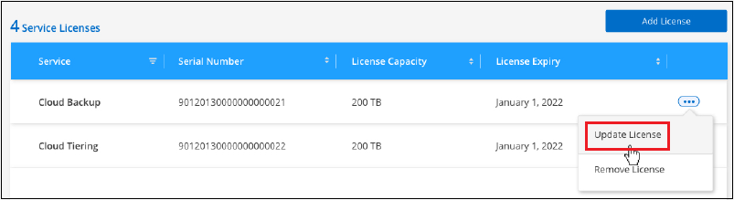

Versionshinweise
Versionshinweise
Lizenzierung für Backup und Recovery von BlueXP einrichten
 Änderungen vorschlagen
Änderungen vorschlagen
Sie können BlueXP Backup und Recovery lizenzieren, indem Sie ein Pay-as-you-go- (PAYGO) oder ein Jahresabonnement Ihres Cloud-Providers erwerben oder ein BYOL-Modell (Bring-Your-Own-License) von NetApp erwerben. Um das Backup und Recovery von BlueXP in einer Arbeitsumgebung zu aktivieren, Backups Ihrer Produktionsdaten zu erstellen und Backup-Daten auf einem Produktionssystem wiederherzustellen, ist eine gültige Lizenz erforderlich.
Ein paar Notizen, bevor Sie weitere lesen:
-
Wenn Sie auf dem Marketplace Ihres Cloud-Providers für ein Cloud Volumes ONTAP-System bereits ein PAYGO-Abonnement (Pay-as-you-go) abonniert haben, haben Sie auch das Backup und Recovery von BlueXP automatisch abonniert. Sie müssen sich nicht erneut anmelden.
-
Das BYOL (Bring-Your-Own-License) von BlueXP für Backup und Recovery ist eine Floating Lizenz, die Sie über alle mit Ihrem BlueXP Konto verknüpften Systeme hinweg verwenden können. Wenn also über ausreichende Backup-Kapazität mit einer bestehenden BYOL-Lizenz verfügen, müssen Sie keine weitere BYOL-Lizenz erwerben.
-
Wenn Sie eine BYOL-Lizenz verwenden, empfehlen wir Ihnen, auch ein PAYGO Abonnement zu abonnieren. Wenn Sie mehr Daten sichern, als durch Ihre BYOL-Lizenz zulässig ist, oder wenn die Laufzeit Ihrer Lizenz abläuft, wird das Backup über Ihr Pay-as-you-go-Abonnement fortgesetzt – der Service wird nicht unterbrochen.
-
Beim Backup von lokalen ONTAP-Daten in StorageGRID ist eine BYOL-Lizenz erforderlich. Es entstehen jedoch keine Kosten für Cloud-Provider-Storage.
30 Tage kostenlos testen mit unserer
Wenn Sie sich für ein Pay-as-you-go-Abonnement auf dem Marketplace Ihres Cloud-Providers anmelden, ist eine kostenlose Testversion von BlueXP Backup und Recovery für 30 Tage verfügbar. Die kostenlose Testversion beginnt zu dem Zeitpunkt, zu dem Sie die Marketplace-Liste abonnieren. Beachten Sie, dass Sie bei der Implementierung eines Cloud Volumes ONTAP Systems, wenn Sie für das Marketplace-Abonnement zahlen und dann 10 Tage später die kostenlose Testversion von BlueXP Backup und Recovery starten, noch 20 Tage für die kostenlose Testversion haben.
Nach Ablauf der kostenlosen Testversion werden Sie automatisch und ohne Unterbrechung auf das PAYGO-Abonnement umgeschaltet. Wenn Sie BlueXP Backup und Recovery nicht weiterhin nutzen möchten, einfach nur "Heben Sie die Registrierung von BlueXP Backup und Recovery aus der Betriebsumgebung auf" Vor Ablauf der Testversion wird Ihnen keine Rechnung erhoben.
Nutzen Sie ein BlueXP PAYGO-Abonnement für Backup und Recovery
Beim nutzungsbasierten Modell bezahlen Sie Ihren Cloud-Provider für Objekt-Storage-Kosten und für NetApp Backup-Lizenzen auf Stundenbasis in einem einzigen Abonnement. Sie sollten sich auch dann abonnieren, wenn Sie eine kostenlose Testversion haben oder Ihre eigene Lizenz mitbringen (BYOL):
-
Durch die Anmeldung wird sichergestellt, dass nach der kostenlosen Testversion keine Serviceunterbrechung erfolgt. Nach Ablauf der Testversion werden Ihnen die Daten, die Sie sichern, stündlich in Rechnung gestellt.
-
Wenn Sie mehr Daten sichern, als durch Ihre BYOL-Lizenz zulässig, werden die Backup- und Restore-Vorgänge über Ihr Pay-as-you-go-Abonnement fortgesetzt. Wenn Sie beispielsweise eine 10-tib-BYOL-Lizenz haben, wird die gesamte Kapazität über den 10 tib Speicherplatz durch das PAYGO-Abonnement berechnet.
Ihr Pay-as-you-go-Abonnement wird während der kostenlosen Testversion nicht in Rechnung gestellt, oder wenn die BYOL-Lizenz nicht überschritten wurde.
Es gibt einige PAYGO-Pläne für das Backup und Recovery von BlueXP:
-
Paket „Cloud Backup“, mit dem Sie Cloud Volumes ONTAP Daten und ONTAP Daten vor Ort sichern können
-
Ein „CVO Professional“-Paket, mit dem Sie Backup und Recovery von Cloud Volumes ONTAP und BlueXP bündeln können. Dazu zählen unbegrenzte Backups für das Cloud Volumes ONTAP-System mit der Lizenz (die Backup-Kapazität wird nicht von der lizenzierten Kapazität erfasst). Mit dieser Option können Sie kein Backup von lokalen ONTAP Daten erstellen.
Beachten Sie, dass für diese Option auch ein PAYGO-Abonnement für Backup und Recovery erforderlich ist, für qualifizierte Cloud Volumes ONTAP-Systeme fallen jedoch keine Gebühren an.
-
Ein „CVO Edge Cache“-Paket verfügt über die gleichen Funktionen wie das „CVO Professional“-Paket, enthält aber auch Unterstützung für das "BlueXP Edge-Caching" Service: Sie können ein Edge Caching Edge System von BlueXP für jeweils 3 tib bereitgestellter Kapazität auf dem Cloud Volumes ONTAP System implementieren. Diese Option ist über Azure und Google Marketplaces verfügbar und ermöglicht Ihnen nicht das Backup von On-Premises-ONTAP-Daten.
Verwenden Sie diese Links, um BlueXP Backup und Recovery über den Marketplace Ihres Cloud-Providers zu abonnieren:
Verwenden Sie einen Jahresvertrag
Jährliche Zahlung für BlueXP Backup und Recovery durch Erwerb eines Jahresvertrags Das Angebot ist mit Laufzeiten von 1, 2 oder 3 Jahren erhältlich.
Wenn Sie einen Jahresvertrag von einem Markt haben, wird der gesamte Verbrauch von BlueXP Backup und Recovery mit diesem Vertrag in Rechnung gestellt. Es ist nicht möglich, einen jährlichen Marktvertrag mit einem BYOL-Modell zu kombinieren.
Bei der Nutzung von GCP können Sie Ihren NetApp Vertriebsmitarbeiter kontaktieren, um einen Jahresvertrag zu erwerben. Der Vertrag ist als Privatangebot im Google Cloud Marketplace erhältlich.
Nachdem NetApp das private Angebot an Sie weitergibt, können Sie den Jahresplan auswählen, wenn Sie während der Aktivierung von BlueXP Backup und Recovery im Google Cloud Marketplace abonnieren.
Verwenden Sie eine BlueXP BYOL-Lizenz für Backup und Recovery
Mit den Bring-Your-Own-License-Lizenzen von NetApp erhalten Sie Vertragsbedingungen mit 1, 2 oder 3 Jahren. Sie bezahlen nur für die Daten, die Sie sichern, berechnet sich anhand der genutzten logischen Kapazität (before any Effizienzfunktionen) der zu sichernden ONTAP Quell-Volumes. Diese Kapazität wird auch als Front-End Terabyte (FETB) bezeichnet.
Die BYOL BlueXP Backup- und Recovery-Lizenz ist eine Floating-Lizenz, bei der die Gesamtkapazität über alle Systeme Ihres BlueXP Kontos hinweg gemeinsam genutzt wird. Bei ONTAP Systemen wird die erforderliche Kapazität durch Ausführen des CLI-Befehls grob geschätzt volume show -fields logical-used-by-afs Für die Volumes, die Sie sichern möchten.
Wenn Sie keine BlueXP BYOL-Lizenz für Backup und Recovery besitzen, klicken Sie rechts unten in BlueXP auf das Chat-Symbol, um eine zu kaufen.
Wenn Sie optional eine nicht zugewiesene Node-basierte Lizenz für Cloud Volumes ONTAP haben, die Sie nicht verwenden werden, können Sie sie in eine BlueXP Backup- und Recovery-Lizenz mit derselben Dollar-Äquivalenz und demselben Ablaufdatum konvertieren. "Weitere Informationen finden Sie hier".
Sie nutzen das Digital Wallet von BlueXP zum Management von BYOL-Lizenzen. Sie können über das BlueXP Digital Wallet neue Lizenzen hinzufügen, vorhandene Lizenzen aktualisieren und den Lizenzstatus einsehen.
Rufen Sie die Lizenzdatei für das Backup und Recovery von BlueXP ab
Nachdem Sie Ihre BlueXP Lizenz für Backup und Recovery (Cloud-Backup) erworben haben, aktivieren Sie die Lizenz in BlueXP entweder durch Eingabe der Seriennummer und des NSS-Kontos (NetApp Backup und Recovery) oder durch Hochladen der NetApp Lizenzdatei. Die folgenden Schritte zeigen, wie Sie die Lizenzdatei NLF abrufen können, wenn Sie diese Methode verwenden möchten.
Wenn Sie BlueXP Backup und Recovery auf einer lokalen Site ohne Internetzugang ausführen, haben Sie den BlueXP Connector in implementiert "Privater Modus", Sie müssen die Lizenzdatei von einem mit dem Internet verbundenen System beziehen. Die Aktivierung der Lizenz unter Verwendung der Seriennummer und des NetApp Support-Website-Kontos ist für Installationen im privaten Modus nicht verfügbar.
Sie müssen die folgenden Informationen haben, bevor Sie beginnen:
-
BlueXP Seriennummer für Backup und Recovery
Suchen Sie diese Nummer in Ihrem Auftrag, oder wenden Sie sich an das Account Team, um diese Informationen zu erhalten.
-
BlueXP Konto-ID
Sie können Ihre BlueXP-Konto-ID finden, indem Sie oben in BlueXP das Dropdown-Menü Konto auswählen und dann neben Ihrem Konto auf Konto verwalten klicken. Ihre Account-ID wird auf der Registerkarte „Übersicht“ angezeigt. Verwenden Sie Account-DARKSITE1 für die Seite im Privatmodus ohne Internetzugang.
-
Melden Sie sich beim an "NetApp Support Website" Klicken Sie anschließend auf Systeme > Softwarelizenzen.
-
Geben Sie die Seriennummer Ihrer BlueXP Backup- und Recovery-Lizenz ein.

-
Klicken Sie in der Spalte Lizenzschlüssel auf NetApp Lizenzdatei abrufen.
-
Geben Sie Ihre BlueXP-Konto-ID ein (dies wird als Mandanten-ID auf der Support-Website bezeichnet) und klicken Sie auf Absenden, um die Lizenzdatei herunterzuladen.

Fügen Sie BlueXP BYOL-Lizenzen für Backup und Recovery in Ihr Konto hinzu
Nachdem Sie eine BlueXP Backup- und Recovery-Lizenz für Ihr NetApp Konto erworben haben, müssen Sie die Lizenz zu BlueXP hinzufügen.
-
Klicken Sie im BlueXP-Menü auf Governance > Digital Wallet und wählen Sie dann die Registerkarte Data Services Licenses aus.
-
Klicken Sie Auf Lizenz Hinzufügen.
-
Geben Sie im Dialogfeld „Lizenz hinzufügen“ die Lizenzinformationen ein, und klicken Sie auf Lizenz hinzufügen:
-
Wenn Sie über die Seriennummer der Sicherungslizenz verfügen und Ihr NSS-Konto kennen, wählen Sie die Option Seriennummer eingeben aus, und geben Sie diese Informationen ein.
Wenn Ihr NetApp Support Site Konto nicht in der Dropdown-Liste verfügbar ist, "Fügen Sie das NSS-Konto zu BlueXP hinzu".
-
Wenn Sie über die Sicherungslizenz verfügen (erforderlich, wenn Sie sie in einem dunklen Standort installieren), wählen Sie die Option Lizenzdatei hochladen aus und befolgen Sie die Anweisungen, um die Datei anzuhängen.

-
BlueXP fügt die Lizenz hinzu, sodass Backup und Recovery von BlueXP aktiv sind.
Aktualisieren einer BlueXP BYOL-Lizenz für Backup und Recovery
Wenn sich Ihre Lizenzlaufzeit dem Ablaufdatum nähert oder Ihre lizenzierte Kapazität die Grenze erreicht, werden Sie in der Backup-Benutzeroberfläche benachrichtigt. Dieser Status wird auch auf der BlueXP Digital Wallet-Seite und in angezeigt "Benachrichtigungen".

Sie können Ihre BlueXP Backup- und Recovery-Lizenz aktualisieren, bevor sie abläuft. So wird Ihre Möglichkeit, Backups und Restores Ihrer Daten durchzuführen, nicht unterbrochen.
-
Klicken Sie auf das Chat-Symbol unten rechts bei BlueXP oder wenden Sie sich an den Support, um eine Verlängerung Ihrer Laufzeit oder zusätzliche Kapazität für Ihre BlueXP Backup- und Recovery-Lizenz für die jeweilige Seriennummer zu beantragen.
Nachdem Sie für die Lizenz bezahlt und sie auf der NetApp Support-Website registriert ist, aktualisiert BlueXP automatisch die Lizenz im Digital Wallet von BlueXP. Auf der Seite „Data Services Licenses“ wird die Änderung in 5 bis 10 Minuten dargestellt.
-
Wenn BlueXP die Lizenz nicht automatisch aktualisieren kann (z. B. wenn sie auf einer dunklen Website installiert ist), müssen Sie die Lizenzdatei manuell hochladen.
-
Das können Sie Beziehen Sie die Lizenzdatei über die NetApp Support-Website.
-
Klicken Sie auf der BlueXP Digital Wallet-Seite Data Services Licenses auf
 Klicken Sie für die Serviceseriennummer, die Sie aktualisieren, auf Lizenz aktualisieren.
Klicken Sie für die Serviceseriennummer, die Sie aktualisieren, auf Lizenz aktualisieren.
-
Laden Sie auf der Seite Update License die Lizenzdatei hoch und klicken Sie auf Update License.
-
BlueXP aktualisiert die Lizenz, sodass das Backup und Recovery von BlueXP weiterhin aktiv bleibt.
Überlegungen zu BYOL-Lizenzen
Bei der Verwendung einer BlueXP BYOL-Lizenz für Backup und Recovery zeigt BlueXP auf der Benutzeroberfläche eine Warnung an, wenn die Größe aller zu sichernden Daten dem Kapazitätslimit nähert oder dem Ablaufdatum der Lizenz nähert. Sie erhalten folgende Warnungen:
-
Wenn Backups 80 % der lizenzierten Kapazität erreicht haben, und noch einmal, wenn Sie die Obergrenze erreicht haben
-
30 Tage, bevor eine Lizenz abläuft, und wieder, wenn die Lizenz abläuft
Verwenden Sie das Chat-Symbol rechts unten in der BlueXP-Schnittstelle, um Ihre Lizenz zu verlängern, wenn diese Warnungen angezeigt werden.
Zwei Dinge können passieren, wenn Ihre Byol-Lizenz abläuft:
-
Wenn das von Ihnen verwendete Konto über ein Marketplace-PAYGO-Konto verfügt, wird der Backup-Service weiter ausgeführt, Sie werden jedoch zu einem PAYGO-Lizenzmodell verschoben. Die Kapazität Ihrer Backups wird Ihnen in Rechnung gestellt.
-
Wenn das Konto, das Sie verwenden, kein Marketplace-Konto hat, läuft der Backup-Service weiter, aber Sie werden weiterhin die Warnungen sehen.
Sobald Sie Ihr BYOL-Abonnement verlängert haben, aktualisiert BlueXP die Lizenz automatisch. Wenn BlueXP nicht über die sichere Internetverbindung auf die Lizenzdatei zugreifen kann (z. B. bei Installation in einer dunklen Site), können Sie die Datei selbst beziehen und sie manuell auf BlueXP hochladen. Anweisungen hierzu finden Sie unter "Aktualisieren einer BlueXP Backup- und Recovery-Lizenz".
Systeme, die auf eine PAYGO-Lizenz verschoben wurden, werden automatisch an die BYOL-Lizenz zurückgegeben. Bei Systemen, die ohne Lizenz ausgeführt wurden, werden die Warnungen nicht mehr angezeigt.